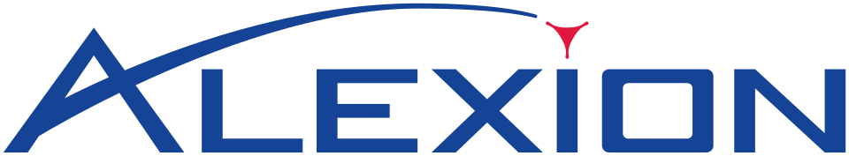

Alexion Pharmaceuticals
Alexion Pharmaceuticals는 희귀질환 치료용 희귀의약품을 전문으로 하는 미국의 제약회사이다. 1992년에 설립되었으며 현재 AstraZeneca의 자회사이다.
최종 업데이트

Alexion Pharmaceuticals는 어떤 브랜드인가
Alexion Pharmaceuticals는 미국에 기반을 둔 제약회사로, 희귀질환 치료에 쓰이는 희귀의약품을 전문으로 한다. 주요 제품으로 Soliris(eculizumab)와 Ultomiris(ravulizumab)가 있으며, 두 약은 비정형 용혈성 요독 증후군(aHUS)과 발작성 야간 혈색소뇨증(PNH) 치료에 쓰인다.
그 밖에 Strensiq, Kanuma, Andexxa를 제품군에 두고 있다. 이 회사가 만드는 약은 연간 비용이 최대 $2 million에 이를 수 있어 세계에서 가장 비싼 약에 속한다.
2021년 7월 AstraZeneca가 이 회사를 인수하면서 AstraZeneca의 자회사가 되었다.
Alexion Pharmaceuticals는 어떻게 시작되고 성장했나
Alexion Pharmaceuticals는 1992년 코네티컷주 뉴헤이븐의 Science Park에서 Steven Squinto와 Leonard Bell이 설립했다. 2000년에 본사를 뉴헤이븐에서 코네티컷주 체셔로 옮겼다.
2007년 미국 식품의약국(FDA)으로부터 Soliris 승인을 받았으며, 처음에는 희귀 혈액 질환인 발작성 야간 혈색소뇨증 치료제로 승인되었다. 2011년 12월 몬트리올 기반의 Enobia Pharma를, 2015년 6월 Synageva를 인수하며 희귀질환 치료제 사업을 넓혔다.
2015년 4월에는 Bell이 물러나고 David Hallal이 CEO를 맡았다.
Alexion Pharmaceuticals의 브랜드 아이덴티티는 무엇인가
희귀질환 치료용 희귀의약품에 집중하며, 연간 비용이 최대 $2 million에 이를 수 있는 고가 약을 만드는 AstraZeneca 자회사이다.
Alexion Pharmaceuticals의 대표 제품과 서비스는 무엇인가
대표 제품은 Soliris(eculizumab)와 Ultomiris(ravulizumab)이며, 비정형 용혈성 요독 증후군(aHUS)과 발작성 야간 혈색소뇨증(PNH) 치료에 쓰인다. Strensiq(asfotase alfa)는 희귀 대사 질환인 저인산증(hypophosphatasia) 치료에 쓰이고, 2015년 10월 FDA 승인을 받았다.
Kanuma(sebelipase alfa)는 리소좀산 리파아제 결핍증 치료에 쓰인다. Andexxa(andexanet alfa)는 rivaroxaban이나 apixaban을 복용 중인 사람의 생명을 위협하거나 조절되지 않는 출혈을 멈추는 데 쓰인다.
Alexion Pharmaceuticals는 지금 어떤 상태인가
2021년 7월 AstraZeneca가 $39 billion에 이 회사를 인수했고, 현재 AstraZeneca의 자회사이다. 2017년 9월에는 인력을 20% 줄이고 본사를 보스턴으로 옮기겠다고 발표했으며, 로드아일랜드주 Smithfield의 제조 시설 폐쇄도 함께 발표했다.
2020년 7월에는 터키와 러시아 공무원에게 뇌물을 제공해 약품 승인을 받으려 했다는 의혹을 해소하기 위해 $21 million이 넘는 금액을 지급하기로 합의했다.
Alexion Pharmaceuticals 로고는 어떻게 변해왔나
자주 묻는 질문
Alexion Pharmaceuticals는 어느 나라 브랜드인가요?
Alexion Pharmaceuticals는 미국의 헬스·제약 브랜드입니다.
Alexion Pharmaceuticals는 언제 설립되었나요?
Alexion Pharmaceuticals는 1992년 설립되었습니다.
Alexion Pharmaceuticals의 브랜드 아이덴티티는 무엇인가요?
희귀질환 치료용 희귀의약품에 집중하며, 연간 비용이 최대 $2 million에 이를 수 있는 고가 약을 만드는 AstraZeneca 자회사이다.
Alexion Pharmaceuticals의 대표 제품은 무엇인가요?
대표 제품은 Soliris(eculizumab)와 Ultomiris(ravulizumab)이며, 비정형 용혈성 요독 증후군(aHUS)과 발작성 야간 혈색소뇨증(PNH) 치료에 쓰인다.
Alexion Pharmaceuticals는 어느 기업이 소유하고 있나요?
2021년 7월 AstraZeneca가 $39 billion에 이 회사를 인수했고, 현재 AstraZeneca의 자회사이다.
Alexion Pharmaceuticals의 본사는 어디에 있나요?
Alexion Pharmaceuticals의 본사는 체셔에 있습니다(위키데이터 기준).
Alexion Pharmaceuticals의 공식 웹사이트는 어디인가요?
Alexion Pharmaceuticals의 공식 웹사이트는 http://www.alxn.com 입니다.
출처와 검증
Alexion Pharmaceuticals 관련 참고: 공식 웹사이트 · 위키데이터 Q204727 · 영어 위키백과. 브랜드명은 한글과 원어를 함께 표기하되 데이터에 없는 표기는 만들지 않습니다. 기원 국가·설립연도는 검수된 정의문에서 확인된 값을 우선하고, 없을 때만 공식 웹사이트 URL이 일치하는 위키데이터 개체의 값을 씁니다. 위키데이터 값은 2026-11-15 기준입니다.